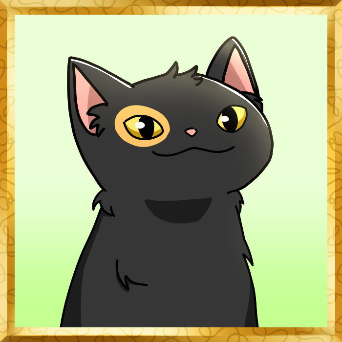
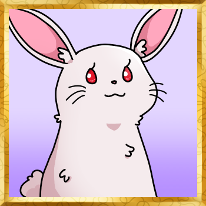
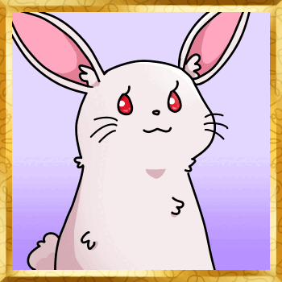

Make your own textboxes with ease!
Here is a sample textbox for you!
How to use the website:
1. Type in the text you want for your textbox page!
2. Add a profile picture to see who's talking!
Cat

Bunny

3. Add another page with the "Add Page" button!
4. View your textbox with the "Make your textbox!" button!

Remeber to use the page buttons to go through your pages!